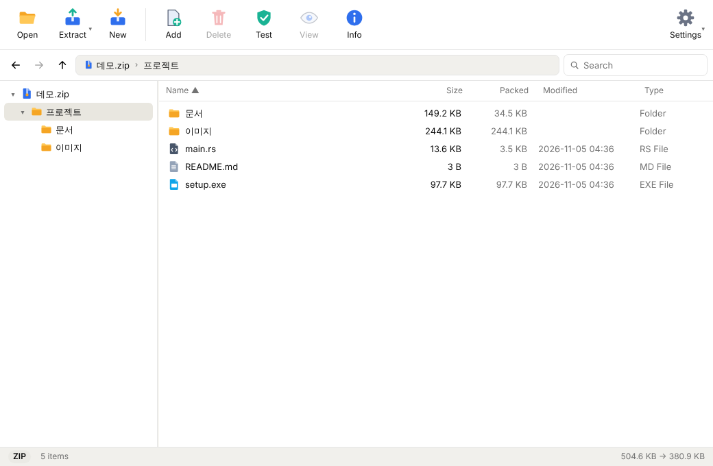
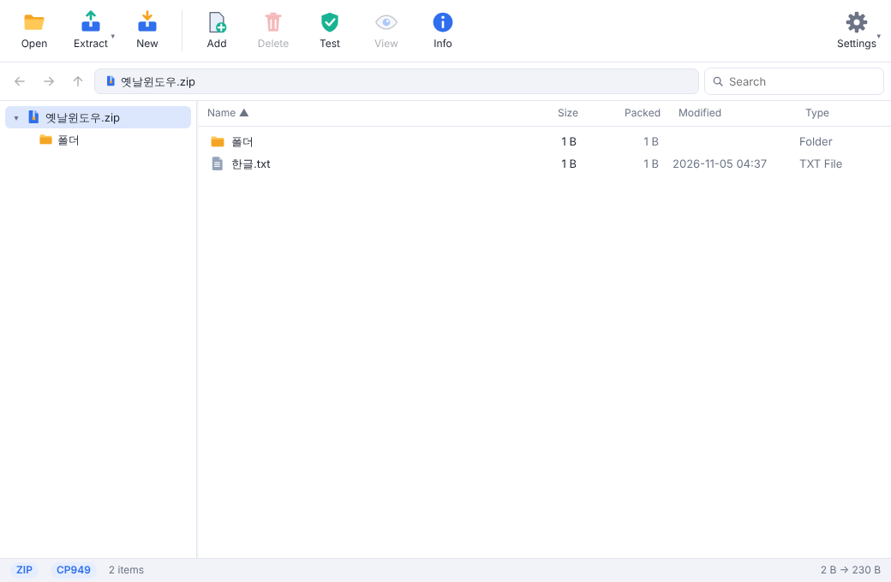
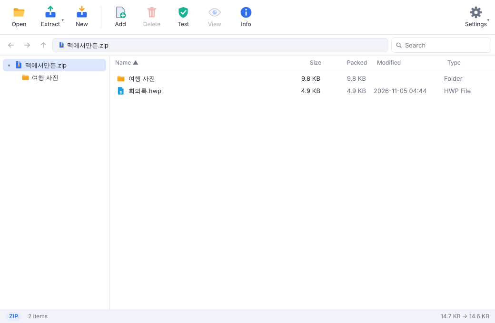
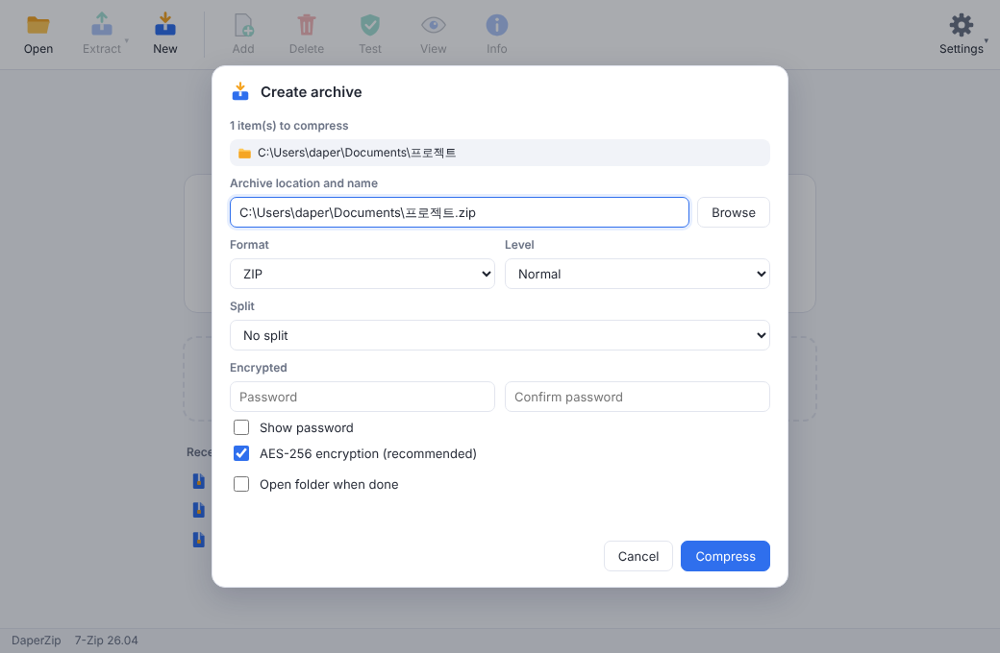
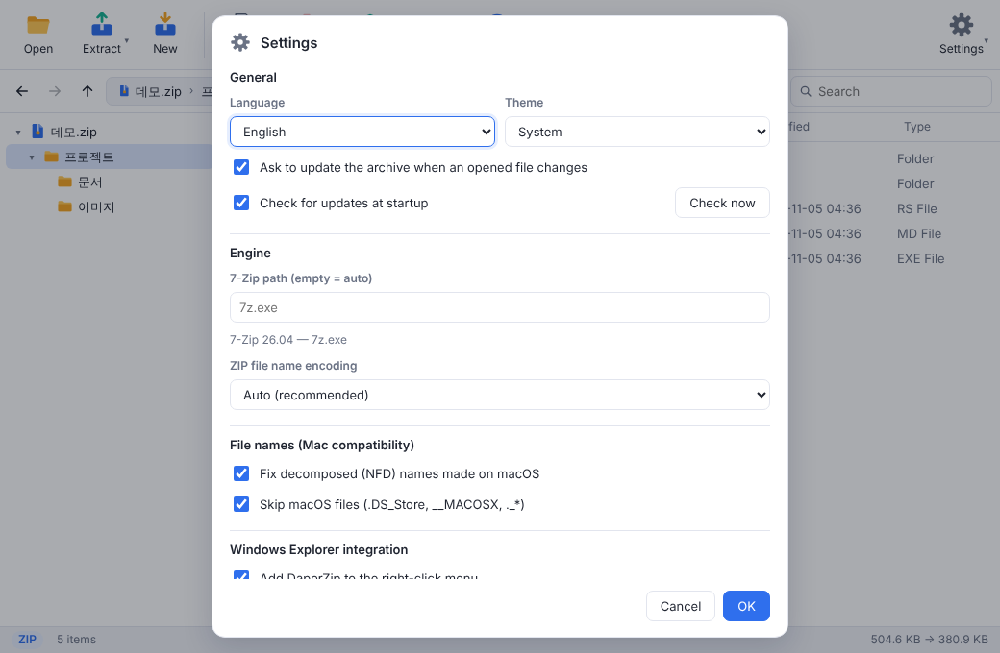

Most archive formats
Open and extract ZIP, 7Z, RAR, TAR, GZ, XZ, ISO, CAB, WIM, LZH and everything else 7-Zip reads.
Completely free · Open source Beta
DaperZip is a file archiver for Windows, macOS and Linux. Compression is handled by the 7-Zip engine. No ads, no sign-up, no payments.

Open and extract ZIP, 7Z, RAR, TAR, GZ, XZ, ISO, CAB, WIM, LZH and everything else 7-Zip reads.
One item goes right next to the archive; several items get a folder named after it.
Extract and compress right from Windows Explorer. Multi-selection becomes one job.
Fixes decomposed names from macOS archives and legacy Windows code-page (CP949) ZIPs automatically.
ZIP AES-256, encrypted 7Z file names, split archives (CD, 4 GB and more).
Add, delete, rename, drag and drop. Edit a file inside an archive and save it back.




Windows 10 / 11 · x64
10.15+ · Apple Silicon / Intel
x64 · deb / AppImage
The installer lets you install for yourself (no admin rights) or for all users. It adds the Explorer right-click menu; on Windows 11 it is under "Show more options".
The installer is not code-signed yet, so "Windows protected your PC" may appear. Click "More info" → "Run anyway". The source is fully public, releases are built by GitHub Actions, and you can verify files with SHA256SUMS on the release page.
Open the dmg and drag DaperZip to Applications.
The app is not notarized yet, so macOS warns on first launch. On macOS 14 or earlier, right-click DaperZip in Finder and choose "Open". On macOS 15 or later, open System Settings → Privacy & Security and click "Open Anyway" for DaperZip.
In Terminal you can also clear the quarantine flag: xattr -dr com.apple.quarantine /Applications/DaperZip.app
Install the .deb on Debian/Ubuntu. On other distributions make the AppImage executable and run it.
chmod +x DaperZip_*.AppImageWindows: winget install DaperCorp.DaperZip (under review in winget-pkgs).
macOS and Linux: the installer script verifies files against the release's SHA256SUMS. A curl download carries no macOS quarantine flag, so the app launches without a Gatekeeper warning.
curl -fsSL https://zip.dapercorp.com/install.sh | shIf macOS still blocks it, add --no-quarantine.
curl -fsSL https://zip.dapercorp.com/install.sh | sh -s -- --no-quarantineYes. DaperZip is completely free and open source under the MIT license. Anyone can read the source code on GitHub.
Compression is done by the 7-Zip engine. DaperZip is a separate project that adds convenience on top: automatic fixes for Korean file names, smart extract, editing inside archives and an Explorer right-click menu.
Yes, it can open and extract RAR. It cannot create new RAR archives; for new archives you can choose ZIP, 7Z, TAR variants or WIM.
DaperZip detects decomposed Hangul from macOS archives and legacy Windows (CP949) ZIP names and fixes them automatically. You can also pick the ZIP file name encoding in Settings.
The installers are not code-signed yet, so Windows and macOS show a warning on first launch. On Windows click "More info" → "Run anyway". On macOS 14 or earlier, right-click the app and choose "Open"; on macOS 15 or later, use System Settings → Privacy & Security → "Open Anyway". Releases include SHA256SUMS so you can verify the files.
No. Compression and extraction happen on your computer, and no files or usage data are sent anywhere. On start it checks GitHub for a newer version, which you can turn off in Settings. See the privacy notice for details.
Windows 10 / 11 (x64), macOS 10.15 or later (Apple Silicon and Intel), and Linux x64 (deb and AppImage).